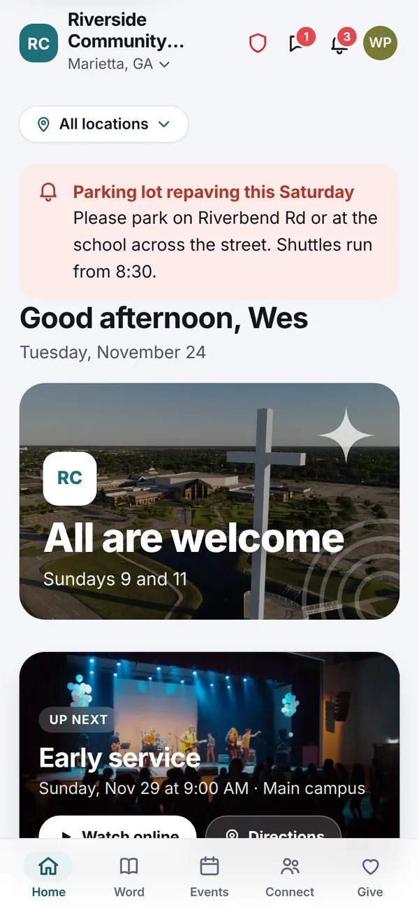
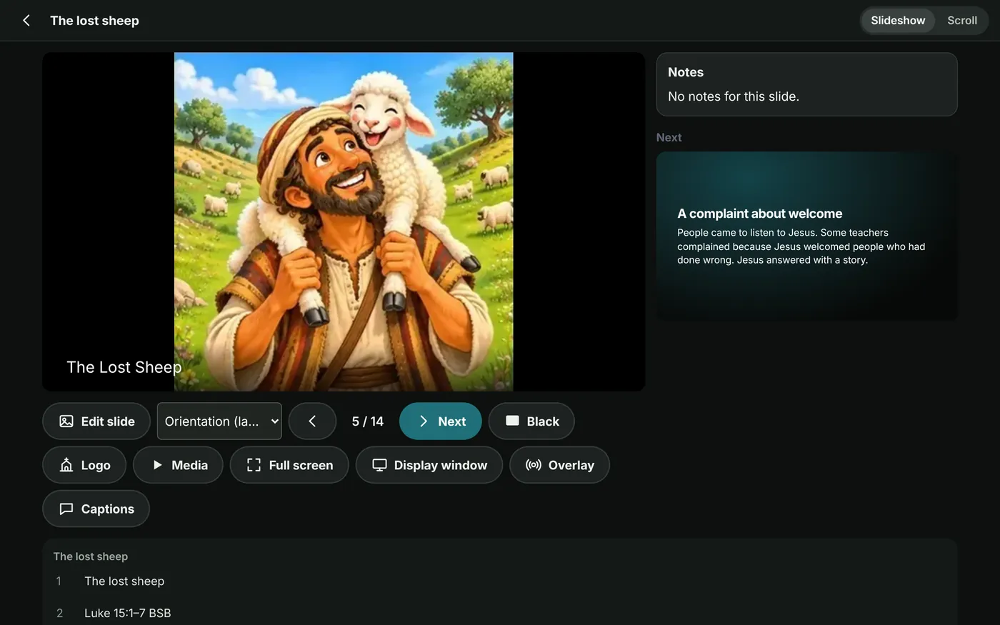
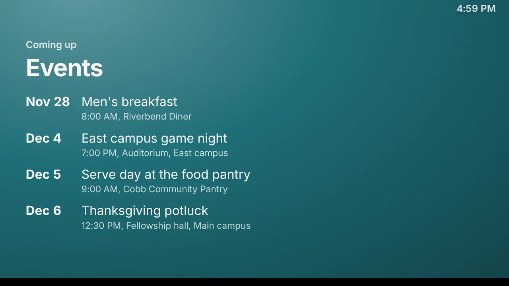
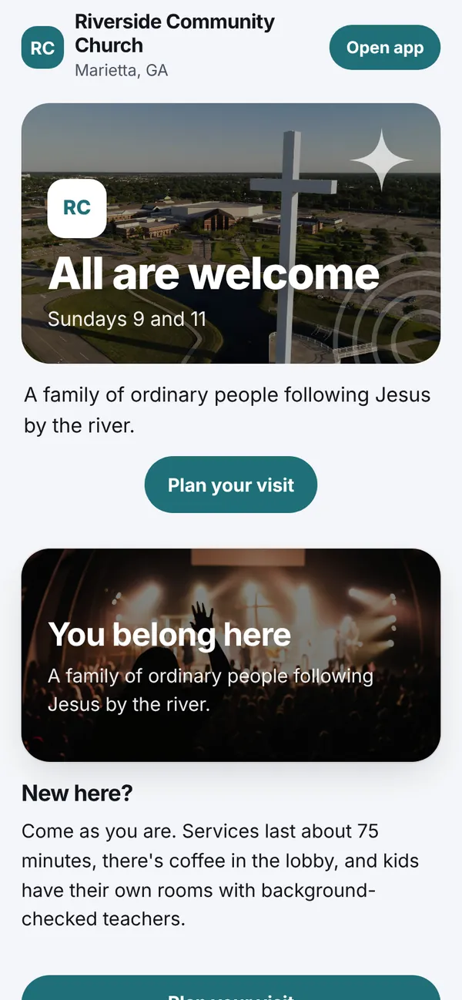
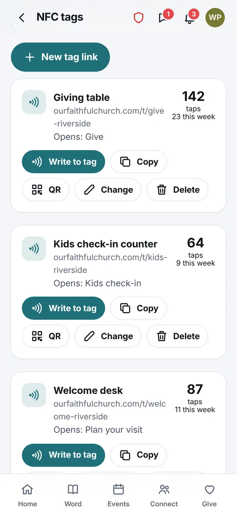

Everything your church does, Sunday through Saturday.
Giving, kids check-in, events, groups, sermons, kids lessons and the screens in your building, in one app your people can open on any phone.
Free for every church, funded by donations. The demo is a whole sample church you can click through; nothing you do there is real.

A week at church, in one app
Sunday is the big day, but church happens all week. Here's what Our Faithful does on each of them.
Sunday
Kids check in at a kiosk and get a printed name tag. Parents keep a pickup code. The lesson plays on the classroom screen, and people give from their phones.
Check-in, lessons, givingMonday
Parents open what their kids learned: a summary, questions for dinner, a project and something to read together.
Parent portalTuesday
First-time guests get a follow-up, and the care team works through the prayer wall.
Guests, prayer, careWednesday
Small groups and classes meet. Leaders take attendance and message their group.
Groups, classes, chatThursday
The volunteer schedule goes out. People accept, block out dates or ask for a sub.
VolunteersFriday
Event sign-ups close, tickets are paid, and the lobby screens change over for the weekend.
Events, screensSaturday
The service plan, songs and slides are ready for the booth, the stage display and the livestream.
Service plans, presenting
Made for the people who make Sunday happen
Everyone gets the tools for their part, and only those. A greeter never sees giving records; a treasurer doesn't need the stage display.
Pastors and teachers
Build a sermon, a Sunday school lesson or a study guide, then present it from the same place. Scripture fills itself in. Kids lessons can start from a Bible story in the Veritas Logos Family Library, with pictures, crafts and games that match the story.

Kids ministry
Check-in stations print name tags with allergies and pickup codes. Classes have rosters and attendance. Coloring pages stay private in class, and parents get the take-home page.
Church office
Online giving with funds and campaigns, deposits and budgets, and year-end giving statements. Each church connects its own Stripe, PayPal or Square account, so gifts go straight to the church.
Welcome team
A Plan your visit page, a campus map with directions from wherever someone is standing, first-visit cards, and NFC tags people can tap at the welcome desk.
Production and tech
Service plans, songs with CCLI details, a stage display, a livestream overlay and captions. Lobby and hallway screens run playlists on a schedule and keep playing if the internet drops.
Safety team
Alerts, drills, door checks, a push-to-talk radio and child reunification, for the people your church trusts with them.
Everyone else
Sermons and the livestream, events, small groups, the prayer wall, the directory, chat, reading plans and giving, on their own phone.

The screens in your building
Turn any TV into a lobby sign, a classroom display or a stage screen. Pair it once with a code. Playlists change on a schedule, and you can skip, pause or switch them from your phone. Our Faithful Screens puts it on Google TV and Android TV, and it starts again on its own after a power cut.
Don't have a church website? We can help.
Every church gets a page of its own at ourfaithfulchurch.com/your-church: service times, directions, the latest sermon, a Plan your visit button and links to everything else. Build it from blocks in the app, with your logo and colors, and change it whenever you like.
Already have a website? Keep it, and use the page as the front door to the app.
Tap to open
Put NFC tags on the giving table, the welcome desk and the check-in counter. A phone that touches one opens the right page. Change where a tag goes any time without rewriting it, and see how many taps it gets.


Get the app
- On the web
- Works now on any phone, tablet or computer. Open ourfaithfulchurch.com/app. On an iPhone, tap Share, then Add to Home Screen, and it opens like any other app.
- Android phones
- Coming to Google Play.
- Google TV and Android TV
- Our Faithful Screens, for the TVs in your lobby, classrooms and sanctuary. Coming to Google Play.
Questions churches ask
What does it cost?
Nothing. Our Faithful is free for churches and is funded by donations from people who want to see it help more churches. The only costs are the usual fees your payment provider charges on gifts your church receives, and texting fees if your church turns on text messages.
Can we try it before we sign up?
Yes. The demo church has sermons, events, groups, kids check-in and giving already set up. Click around as a member or as an admin. Nothing there is real, and you can reset it.
How do people give, and where does the money go?
Your church connects its own Stripe, PayPal or Square account. Gifts, tickets and form fees go straight to that account, and each one charges its own fee per payment.
Who can see our church's information?
Each person sees what their role allows. You decide what greeters, teachers, staff and admins can do, and the database itself enforces it, not just the screens. There are no ads, and nothing is sold. The privacy policy has the details.
Do we need a website first?
No. Your church's page in the app can be your website, at its own address. If you have a website, link to the app from it.
Does it work on iPhones?
Yes, in Safari. Add it to the Home Screen and it opens like an installed app, with notifications.
We have more than one campus. Does that work?
Yes. Each campus has its own services, rooms, screens and check-in, and people see the campus they go to.
Bring your whole week into one place.
Free for every church, funded by donations.